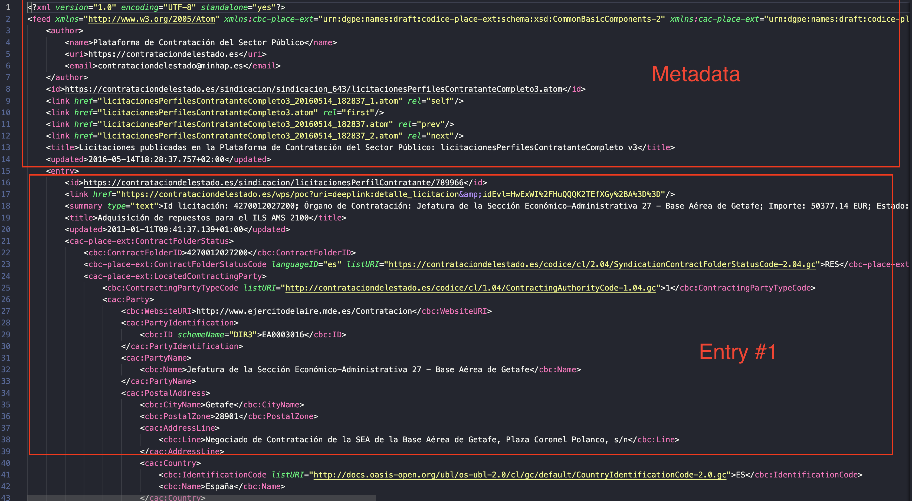

Code
import atoma
import feedparser
feed = atoma.parse_atom_file('data/licitacionesPerfilesContratanteCompleto3.atom')
print(type(feed))<class 'atoma.atom.AtomFeed'>Edu Gonzalo-Almorox
September 14, 2023
Sometimes valuable information often comes in the form of Atom or RSS files, which are essentially plain text formatted in XML. These files serve as a means to distribute content as feeds, ensuring users have access to the latest updates. However, while these files excel at timely information delivery, they can be challenging to decipher and parse. In this blog, I will show how Python can be your key to effortlessly extracting essential insights from these data sources.
First, let’s locate the data .
In this blog, we’ll be exploring a valuable source of information: public contracts. In particular, we will use the open data regarding public contracts released by the Spanish Ministry for Economic Affairs. These datasets are regularly updated, with new information becoming available each day throughout the month.
Before diving into the dasta, it’s essential to understand the structure of atom files. These files consist of two primary components: metadata and a set of entries.
Metadata provide information about document’s author (i.e. the Ministry), the domain’s URI, the date of last update, and more
On the other hand, entries contain detailed information about individual contracts, including contract IDs, prices, dates, and much more. These entries are the core of our data exploration journey.

To read the data we require atoma and feedparser in Python. These tool enable us to load a <class 'atoma.atom.AtomFeed'> in the system that can be manipulated. This class has different arguments but the most interesting and the one that contains the relevant information is the <entry>. In our case, this class provides information about the different contracts (ID of the contract, price, when the contract was updated, etc… ) involving public institutions in Spain.
<class 'atoma.atom.AtomFeed'>This class contains several entries that are associated with a contract. To understand how many entries are contained in the .atom file we can use the length attribute to show the number of entries nested in the .atom
Once we have succesfully read the data, the next step involves parsing the data so we can obtain contract- related information in a more organised and structured manner. Our approach queries each individual element that compose the entry component of the feed. For example, you can get a glimpse of the main elements of the contract by accessing the summary.value component of the entry.
Id licitación: 4270012027200; Órgano de Contratación: Jefatura de la Sección Económico-Administrativa 27 - Base Aérea de Getafe; Importe: 50377.14 EUR; Estado: RESIn the code snippet provided earlier, we observed how to retrieve information for a single contract. However, as our data source comprises details on a sample of 500 public contracts, we need a more efficient approach. To accomplish this, we can define a function that systematically extracts meaningful information for each contract and organizes it into a structured data frame. We can then iterate through all the entries within the file.
The first part of the code (get_values()) extracts relevant information from the contract and stores it in a dictionary that is saved as a data frame. The last part (clean_licitacion()) splits the different elements of the contract:
id of the contract
contractor or institution that perceives the contract
price of the contract
status of the contract
import pandas as pd
def get_values(feed, n):
objeto = feed.entries[n].title.value
perfil_contratante = feed.entries[n].id_
date_update = feed.entries[n].updated
link = feed.entries[n].links[0].href
licitacion = feed.entries[n].summary.value
# Check for missing values and replace them with empty strings
objeto = objeto if objeto else ""
perfil_contratante = perfil_contratante if perfil_contratante else ""
date_update = date_update if date_update else ""
link = link if link else ""
licitacion = licitacion if licitacion else ""
dict = {
'objeto': objeto,
'perfil_contratante': perfil_contratante,
'fecha_actualizacion': date_update,
'link': link,
'licitacion': licitacion
}
dict_df = pd.DataFrame(dict,index=[0])
return dict_df
def clean_licitacion(df):
lic = df[['licitacion']]
# Split the 'licitacion' column into new columns: 'id', 'organo', 'importe', 'estado'
split_value = lic['licitacion'].str.split(';', expand=True)
lic = df
df_new = pd.concat([df, split_value], axis=1)
df_new['id_licitacion'] = df_new[0].str.replace('Id licitación: ', '')
df_new['organo'] = df_new[1].str.replace('Órgano de Contratación: ', '')
df_new['importe'] = df_new[2].str.replace('Importe: ', '')
df_new['importe'] = df_new['importe'].str.replace(' EUR', '')
df_new['estado'] = df_new[3].str.replace('Estado: ', '')
df_new = df_new[['objeto', 'perfil_contratante', 'fecha_actualizacion', 'link', 'id_licitacion', 'organo', 'importe', 'estado']]
return(df_new)This code snippet loops through all the entries in the atom file.
lst_df = []
lst = []
n_values = list(range(1, len(feed.entries)))
for n in n_values:
dict_df = get_values(feed, n)
lst.append(dict_df)
result_df = pd.concat(lst, ignore_index=True)
final_df = clean_licitacion(result_df)
lst_df.append(final_df)
# Create the master_df by concatenating all the DataFrames
master_df = pd.concat(lst_df, ignore_index=True)
master_df.head(3)| objeto | perfil_contratante | fecha_actualizacion | link | id_licitacion | organo | importe | estado | |
|---|---|---|---|---|---|---|---|---|
| 0 | Suministro de energía eléctrica en el Centro d... | https://contrataciondelestado.es/sindicacion/l... | 2013-01-11 09:35:38.409000+01:00 | https://contrataciondelestado.es/wps/poc?uri=d... | 2103/0109 | Dirección General del Instituto de Cinematogr... | 59722.28 | RES |
| 1 | Servicio de duplicado de copias de películas, ... | https://contrataciondelestado.es/sindicacion/l... | 2013-01-11 09:34:24.393000+01:00 | https://contrataciondelestado.es/wps/poc?uri=d... | 2103/0133 | Dirección General del Instituto de Cinematogr... | 64000 | RES |
| 2 | Gas Licuado Propano 2013/2014 | https://contrataciondelestado.es/sindicacion/l... | 2013-01-11 09:16:16.416000+01:00 | https://contrataciondelestado.es/wps/poc?uri=d... | 204152041512012100 | Sección de Asuntos Económicos de la Academia ... | 49586.78 | RES |
Once we have parsed and structured the information, we can make some analysis and obtain some insights. For instance, we can explore what the top institutions by the value of their contracts are.
import plotly.graph_objs as go
master_df['importe'] = pd.to_numeric(master_df['importe'], errors='coerce')
grouped_data = master_df.groupby('organo')['importe'].sum().reset_index()
grouped_data = grouped_data.sort_values(by='importe', ascending=False)
top_contractors = grouped_data.head(10)
fig = go.Figure(data=[go.Pie(labels=top_contractors['organo'], values=top_contractors['importe'],
hole=0.5, pull=[0.1, 0])])
fig.update_layout(
title=dict(text="Top 10 contractors in January 2013", x = 0.45, y=0.9),
legend=dict(orientation="h", y=-5)
)
# Show the plot
fig.show()In this tutorial you have seen how to parse and represent information from atom files using Python. This analysis can be replicated to the case of rss files.
I hope you find it useful. Let me know in the comments if you have any questions or need further clarification.